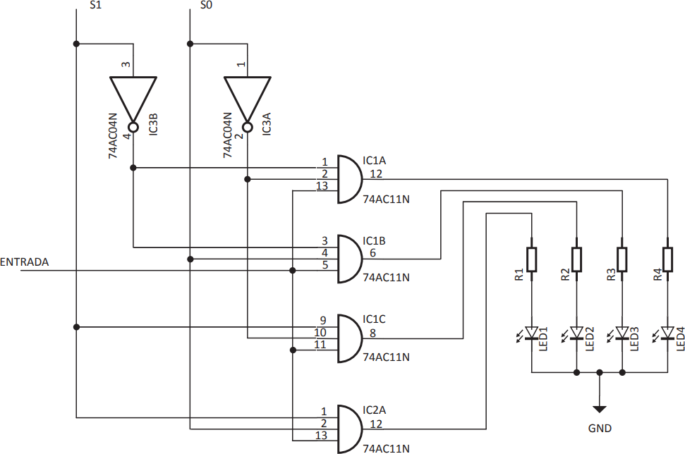

Considere a construção de um Demultiplexador digital (DEMUX) de 4 canais, usando CIs 7404 e 7411, para que um mesmo controle (liga/desliga) seja compartilhado por quatro leds. A figura a seguir apresenta o diagrama esquemático do circuito.
Após a montagem, constatou-se que o circuito não funciona corretamente. Para certificação de que o circuito do diagrama esquemático estava correto, comparou-se os estados esperados com os estados observados do circuito para identificar o defeito. A tabela a seguir sintetiza os dados dessa comparação.
Com base nos dados apresentados na tabela, o defeito que condiz com os resultados das observações é que